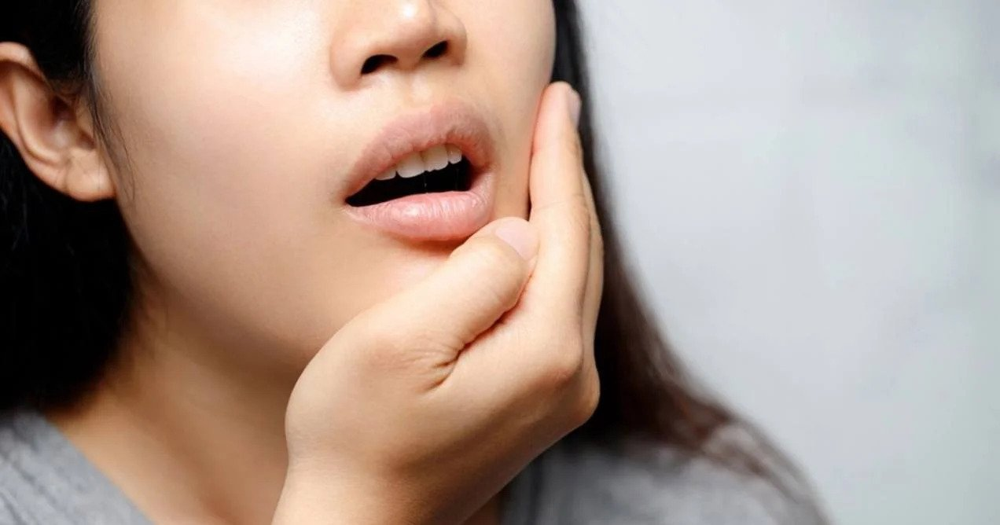
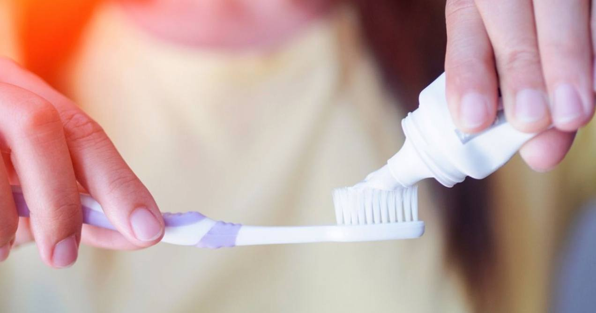

Pregnancy-proof Your Dental Hygiene Regimen
4 min read
.jpg)
If you’re pregnant and are looking to pregnancy proof your dental hygiene regime with the best natural toothpaste for pregnancy, read on.
Out of all the changes your body goes through during pregnancy, you should never forget to take care of your dental hygiene.
For expecting mums, it is essential to practice proper dental care for pregnancy makes you more vulnerable to gum diseases and tooth decay.
Proper oral hygiene may already be part of your routine, but if you’re going to have a brand new life growing inside of you, it’s not enough to choose the best dental products. You have to make sure that the toothpaste you’re using is safe and pregnancy-proof to protect your baby and, of course, your teeth.
Here’s how you can find the best natural toothpaste for pregnancy so you can ensure complete security for you and your baby!
 Common Dental Problems During Pregnancy- Plaque
Also known as pregnancy gingivitis or gum disease, this usually happens during the second trimester where your gums may be more sensitive, leading to bleeding and inflammation. This can cause swelling in your gums when you brush your teeth or when flossing.
- Periodontitis
This gum infection can put you at risk of tooth decay, making your teeth shaky to the point of those affected fall off if left untreated. From the increase of estrogen and progesterone in your body due to pregnancy, this could destroy the supporting bone structure around your teeth.
- Pregnancy Epulis
Another gum disease, pregnancy epulis or pyogenic granuloma can cause a localised enlargement of the gum that makes it bleed easily. According to Better Health, it is advised that you get a professional cleaning to treat this dental problem.
How To Choose The Best Natural Toothpaste for Pregnancy
2 mins read
During pregnancy, it’s not enough to purchase a toothpaste that promises the best results. Most toothpaste products include bad chemicals that could be harmful to you and your baby.
Ingredients in conventional toothpaste such as sodium lauryl sulfate, fluoride and other harmful chemicals can irritate sensitive teeth and gums, especially when pregnant. They can also include toxicity that can cause more vomiting and headaches.
Be mindful of the ingredients lists on your toothpaste for these components, especially sodium lauryl sulfate, are still often being used despite their dangerous effects. It may even best to avoid these products altogether and purchase ones that do not include any harmful Chemical
To ensure you and your baby’s safety, pregnant mums should instead look for the best natural toothpaste for pregnancy that is nontoxic such as Mama's choice nonfuroide toothpaste.